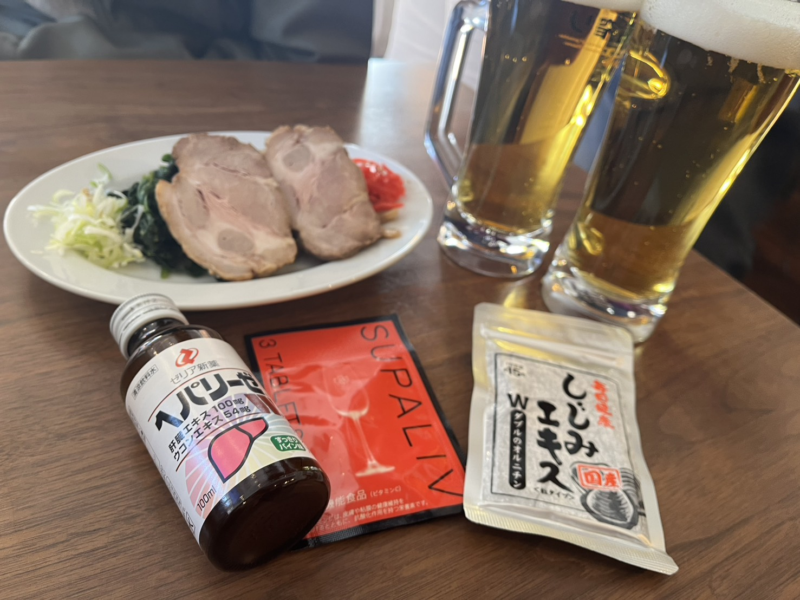

PR
運営事務局が自腹で検証！
飲み会の翌朝対策、結局どれがいい？

「明日の仕事が怖い」
「でも飲み会は全力で楽しみたい」 そんな矛盾を抱える
お酒ラバーの皆さまのため、
事務局メンバーが体を張って
『翌朝、絶望しないための対策』を徹底検証しました。
「でも飲み会は全力で楽しみたい」 そんな矛盾を抱える
お酒ラバーの皆さまのため、
事務局メンバーが体を張って
『翌朝、絶望しないための対策』を徹底検証しました。
⚠️ 本記事について
この記事は広告を含みますが、紹介しているのは運営事務局が実際に購入して「本気で良いと思ったもの」だけです。忖度なしのリアルな検証をお届けします！
🍺 今回の検証内容
「同じ量のお酒」を飲んで、
翌朝どうなるか？運営事務局が
4回試して、ガチ比較しました！
翌朝どうなるか？運営事務局が
4回試して、ガチ比較しました！
💪 飲んだお酒（1回あたり）
💊 今回の比較対象

気になる結果は…！？
検証結果
① なし（水のみ）
💰 価格：0円
② コンビニドリンク
💰 価格：約300円〜
🗣 感想
「手軽で美味しいし、ライトな飲み会ならこれで十分！ただ、今回のようなガッツリ飲むと、もっと強力なサポートが欲しくなるかも？心配性な人は、より高機能なものを選ぶのが安心です。」
「手軽で美味しいし、ライトな飲み会ならこれで十分！ただ、今回のようなガッツリ飲むと、もっと強力なサポートが欲しくなるかも？心配性な人は、より高機能なものを選ぶのが安心です。」
👇 一定の良さを感じた2選 👇
③ SUPALIV（スパリブ）
💰 価格：540円〜
💡 ドイツの名門伯爵家 × 日本人医師が開発
ドイツの名門ワイナリー、グライフェンクラウ伯爵家の当主が日本人医師に依頼したことで開発された『SUPALIV（スパリブ）』。
スパリブは、アルコールの代謝サイクル全般に対応する配合を考え世界各国で特許を取得している画期的なサプリメントです。
スパリブは、アルコールの代謝サイクル全般に対応する配合を考え世界各国で特許を取得している画期的なサプリメントです。
🗣 中の人の感想
「飲んだ翌朝の体の軽さが違った。意外と金額もお手頃だし、最近はコンビニでも買えるっぽい。」
「飲んだ翌朝の体の軽さが違った。意外と金額もお手頃だし、最近はコンビニでも買えるっぽい。」
【こんな人におすすめ】
＼ 今ならお得に試せる！ ／
公式サイトでお試しを見る ＞
- 翌日の仕事を絶対休めないがんばり屋の社会人
- ここぞという飲み会の「お守り」が欲しい人
④ しじみエキス
💰 価格：980円〜
💡 130年の歴史！日本最古の「まじめサプリ」
130年前から作られている日本最古のサプリメントと言われている「しじみエキスＷのオルニチン」は国産天然しじみだけを伝統的な製法を全く変えず、しじみの煮汁のみを長時間煮詰めてつくられたまじめサプリです。
🗣 中の人の感想
「即効性というより、優しく起きられる感じ。味噌汁100杯分の成分は伊達じゃない。内側の健康ケアも兼ねて、毎日飲むならこっちかも。」
「即効性というより、優しく起きられる感じ。味噌汁100杯分の成分は伊達じゃない。内側の健康ケアも兼ねて、毎日飲むならこっちかも。」
【こんな人におすすめ】
＼ 自然の力でスッキリ ／
公式サイトをチェックする ＞
- 化学物質より自然由来がいい健康志向派
- 朝の目覚めを良くしたい人
※本記事は運営事務局メンバーによる個人の感想であり、効果・効能を保証するものではありません。
※商品価格やキャンペーン情報は執筆時点のものです。最新情報は公式サイトをご確認ください。
※商品価格やキャンペーン情報は執筆時点のものです。最新情報は公式サイトをご確認ください。

自分に合った対策を見つけて、
良きお酒ライフを
お過ごしください🍻
良きお酒ライフを
お過ごしください🍻
「地獄。翌朝の頭痛で半日が潰れました。翌日何もない時以外はやめましょう。」